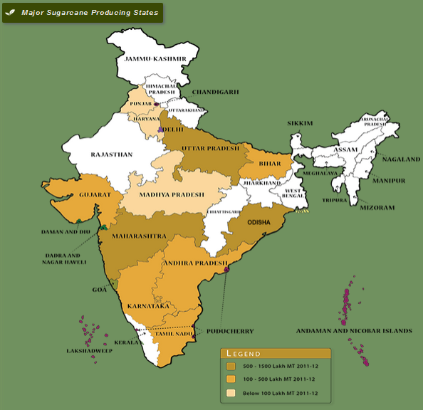

Farmr.
Sugarcane (Saccharum officinarum) family Gramineae (Poaceae) is widely grown crop in India. It provides employment to over a million people directly or indirectly besides contributing significantly to the national exchequer. Sugarcane growing countries of the world lay between the latitude 36.7° north and 31.0° south of the equator extending from tropical to subtropical zones. Sugar cane originated in New Guinea where it has been known for thousands of years. Sugar cane plants spread along human migration routes to Asia and the Indian subcontinent. Here it cross-bred with some wild sugar cane relatives to produce the commercial sugar cane we know today.
Cultivation of sugarcane in India dates back to the Vedic period. The earliest mention of sugarcane cultivation is found in Indian writings of the period 1400 to 1000 B.C. It is now widely accepted that India is the original home of Saccharum species. Saccharum barberi and Polynesian group of island especially New Guinea is the centre of origin of S. officinarum. It belongs to family Gramineae (Poaceae), class monocotyledons and order glumaceae sub family panicoidae, tribe Andripogoneae and sub tribe saccharininea. The cultivated canes belong to two main groups: (a) thin, hardy north Indian types S.barberi and S.Sinense and (b) thick, juicy noble canes Saccharum officinarum. Highly prized cane is S. officinarum.
Important regions/ zones for sugarcane cultivation in IndiaBroadly there are two distinct agro-climatic regions of sugarcane cultivation in India, viz., tropical and subtropical. However, five agro-climatic zones have been identified mainly for the purpose of varietal development. They are (i)North Western Zone (ii) North Central Zone (iii) North Eastern Zone (iv) Peninsular Zone (v) Coastal Zone. Tropical region Shared about 45% and 55% of the total sugarcane area and production in the country, respectively along with the average productivity of 77 t/ha (2011-12). Sub-tropical region accounted for about 55% and 45% of total area and production of sugarcane with an average productivity about 63 t/ha (2011-12)
Tropical Sugarcane regionThe tropical sugarcane region consists of sugarcane agro climatic zone 4 (peninsular zone) and 5(Coastal zone) which includes the states of Maharashtra, Andhra Pradesh, Tamil Nadu, Karnataka, Gujarat, Madhya Pradesh, Goa, Pondicherry and Kerala. Sub-tropical sugarcane region: Around 55 per cent of total cane area in the country is in the sub-tropics. U.P, Bihar, Haryana and Punjab comes under this region. Crop distribution: Sugarcane growing countries of the world are lying between the latitude 36.70 north and 31.00 south of the equator extending from tropical to sub-tropical zones. In India sugarcane is cultivated all over the country from latitude 80 N to 330 N, except cold hilly areas like Kashmir valley, Himachal Pradesh and Arunachal Pradesh.
Climate RequirementTemperature for different critical stages of sugarcane: The different critical stages are germination, tillering, early growth, active growth and elongation. Optimum temperature for sprouting (germination) of stem cuttings is 32° to 38°c. It slows down below 25°, reaches plateau between 30°-34°. Temperatures above 38° reduce the rate of photosynthesis and increase respiration. For ripening, however, relatively low temperatures in the range of 12° to 14° are desirable.
Reduction in yield of sugarcane due to rise in temperatureThe sugarcane productivity and juice quality are profoundly influenced by weather conditions prevailing during the various crop-growth sub-periods. Sugar recovery is highest when the weather is dry with low humidity; bright sunshine hours, cooler nights with wide diurnal variations and very little rainfall during ripening period. These conditions favour high sugar accumulation. The climatic conditions like very high temperature or very low temperature deteriorate the juice quality and thus affecting the sugar quality. Favourable climate like warm and humid climate favour the insect pests and diseases, which cause much damage to the quality and yield of its juice and finally sucrose contents.
Area, production and yield of sugarcane in major growing statesIn Tropical zone Maharashtra is the major sugarcane growing state covering about 9.4 lakh ha area with production of 61.32 Million ton, whereas the productivity of Tamil Nadu is highest in tropical zones. Uttar Pradesh is the highest sugarcane producing State in sub tropical zone having area about 22.77 Lakh ha with the production of 135.64 Million Ton cane whereas Haryana has highest productivity of sugarcane in Sub tropical zone.
